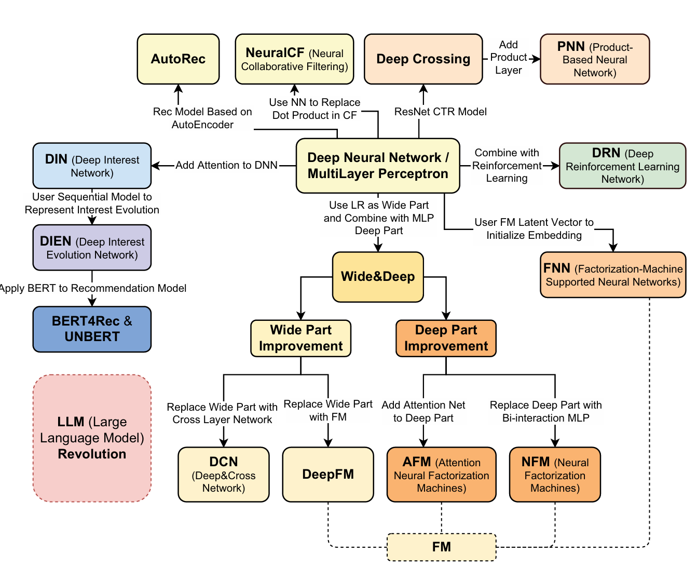

DL Recsys

Deep Ranking Models — Comprehensive Deep Dive
Deep ranking models sit in the late-stage ranking part of the pipeline. Their job: given a few hundred candidates from retrieval, score each candidate with a rich model that captures complex feature interactions. This is where the majority of recommendation quality comes from.
Why Deep Ranking Models Exist
Classical ranking used hand-crafted feature crosses (e.g., “user_age=25 AND item_category=shoes”). This has two problems:
- Feature engineering is expensive — you need domain experts to manually define every useful interaction.
- Generalization is poor — a cross feature only fires for exact matches. “user_age=25 × category=shoes” learns nothing about “user_age=26 × category=sneakers.”
Deep ranking models aim to learn feature interactions automatically while retaining the ability to memorize important specific patterns.
The Models, In Depth
Wide & Deep (Google, 2016)
The paper that launched deep learning in production recommendation.
Architecture:
- Wide component: A linear model that takes manually engineered cross-product features as input. For example,
installed_app × impression_app— this captures the memorization of specific, known-to-be-important feature co-occurrences. - Deep component: A feed-forward MLP (typically 3 layers, 1024→512→256) that takes dense embeddings of categorical features + continuous features. This captures generalization — it can learn that “young users who browse athletic categories” is a meaningful pattern even without explicit feature engineering.
- Joint training: Both components are trained simultaneously with a combined logistic loss. The final prediction is σ(w_wide · x_cross + w_deep · a_final + bias).
Why it matters:
- Memorization (wide) handles the long tail of specific patterns: “users who installed Netflix and see an HBO ad convert at 3x.”
- Generalization (deep) handles unseen combinations: a new user with similar demographics to Netflix users might also like HBO, even without the install signal.
- This was deployed for Google Play app recommendations and became the template for the industry.
Weaknesses:
- The wide component still requires manual feature engineering — you have to decide which crosses matter.
- The deep component learns interactions implicitly through hidden layers, but MLPs are actually not great at learning multiplicative interactions — they approximate them through addition.
DeepFM (Huazhong University & Harbin Institute, 2017)
Key idea: Replace the manually engineered wide component with a Factorization Machine (FM) that automatically learns all 2nd-order feature interactions.
Architecture:
- FM component: For features x₁, x₂, …, xₙ with embeddings v₁, v₂, …, vₙ, computes all pairwise interactions: Σᵢ Σⱼ>ᵢ ⟨vᵢ, vⱼ⟩ · xᵢ · xⱼ. This captures every 2nd-order cross-feature automatically.
- Deep component: Same MLP as Wide & Deep.
- Shared embeddings: Crucially, the FM component and the deep component share the same embedding layer. This means the FM’s learned feature representations inform the deep component and vice versa — no separate feature engineering needed.
- Final output: σ(y_FM + y_deep).
Why it’s better than Wide & Deep:
- No manual feature crosses. The FM learns all pairwise interactions.
- Shared embeddings mean fewer parameters and better training signal for embeddings.
- FM captures explicit 2nd-order interactions; deep captures higher-order implicit interactions.
Connection to classical FMs:
- Factorization Machines (Rendle, 2010) were already the state-of-the-art for sparse, high-dimensional CTR prediction. They generalize matrix factorization to arbitrary feature sets. DeepFM simply adds a deep component on top.
Weakness: FM only captures 2nd-order interactions explicitly. For 3rd-order and above, you still rely on the MLP.
DCN — Deep & Cross Network (Google, 2017) and DCN-v2 (2020)
Key idea: Instead of relying on the MLP to implicitly learn feature crosses, add an explicit cross network that learns bounded-degree feature interactions.
DCN-v1 Architecture:
- Cross network: A series of layers where each layer computes: x_{l+1} = x₀ · (xₗᵀ · w_l) + b_l + xₗ. Here x₀ is the input, and each layer adds one more degree of interaction. After L layers, you get interactions up to degree L+1.
- This is computationally cheap — each layer is just a rank-1 matrix multiplication plus a residual connection.
- The cross network is explicit — you can reason about what degree of interaction each layer captures.
- Deep network: Standard MLP, same as before.
- Outputs are concatenated and passed through a final linear layer.
DCN-v2 Improvements:
- The v1 cross network has limited expressiveness — each layer is rank-1. DCN-v2 replaces the rank-1 weight vector with a full weight matrix: x_{l+1} = x₀ ⊙ (W_l · xₗ + b_l) + xₗ.
- Uses Mixture of Experts (MoE) in the cross layers — multiple expert weight matrices, with a gating network selecting which experts to use. This dramatically increases capacity while keeping compute bounded.
- Two architectures: stacked (cross → deep sequentially) and parallel (cross and deep in parallel, concatenated). Stacked generally performs better.
Why DCN matters:
- MLPs are inefficient at learning multiplicative feature interactions. They can approximate them, but it requires many parameters and training steps. The cross network provides a direct, efficient path.
- You get explicit control over the interaction degree (network depth = max interaction order).
- DCN-v2 with MoE is the current production standard at Google for ad ranking.
DIN — Deep Interest Network (Alibaba, 2018)
This is arguably the most important architecture for e-commerce recommendation.
The Problem DIN Solves: In shopping, a user’s intent is highly context-dependent. If I’m looking at a winter jacket, my past purchase of hiking boots is very relevant, but my purchase of a phone charger is not. Standard models (including Wide & Deep, DeepFM, DCN) represent a user as a fixed-length vector by averaging or pooling all their historical behaviors. This loses critical context.
Architecture:
- Behavior sequence: The user’s past N interactions, each represented as an item embedding.
- Candidate item: The item being scored, also represented as an embedding.
- Attention mechanism: For each historical item, compute an attention weight relative to the candidate item:
- a(eᵢ, e_candidate) = MLP([eᵢ; e_candidate; eᵢ ⊙ e_candidate; eᵢ − e_candidate])
- This outputs a scalar weight for each historical item.
- Weighted sum: The user representation = Σ aᵢ · eᵢ — a candidate-aware weighted average of historical behaviors.
- This user representation, along with other user/context features, is fed to a standard MLP for final scoring.
Key Design Decisions:
- No softmax normalization on attention weights — unlike standard attention, DIN uses raw attention scores. The reasoning: if a user has no relevant history for a candidate, the attention weights should all be low, producing a near-zero user representation for that interest. Softmax would force a distribution that sums to 1, artificially amplifying irrelevant behaviors.
- Activation function: PReLU (parametric ReLU) instead of ReLU — handles the sparse, imbalanced distribution of attention scores better.
- Mini-batch Aware Regularization: With massive categorical feature spaces (billions of product IDs), standard L2 regularization computes over all parameters. DIN regularizes only the parameters present in each mini-batch, making training tractable.
- Data Adaptive Activation Function (Dice): A smooth, data-dependent alternative to PReLU that adapts its shape to the input distribution.
Why it’s transformative for shopping: Before DIN, if you bought running shoes, a phone case, and diapers, your user embedding was a blurry average of an athlete, a tech user, and a parent. With DIN, when scoring a protein bar, the attention mechanism upweights running shoes and downweights phone case and diapers. Your user representation changes for every candidate.
DIEN — Deep Interest Evolution Network (Alibaba, 2019)
Key idea: User interests aren’t just a bag of behaviors — they evolve over time. DIN captures relevance but ignores temporal dynamics.
Architecture (two key modules):
Interest Extractor Layer:
- A GRU (Gated Recurrent Unit) over the user behavior sequence, producing hidden states h₁, h₂, …, hₜ.
- Auxiliary loss: At each time step, the GRU should predict the next item in the sequence. An auxiliary binary cross-entropy loss ensures each hidden state hₜ captures the user’s interest at time t (positive = next actual click, negative = random item).
- Without this auxiliary loss, the GRU hidden states tend to just encode item identity rather than evolving interest.
Interest Evolution Layer:
- An attention-based GRU (AUGRU) that evolves interest states relative to the candidate item.
- Attention scores are computed between each hidden state and the candidate item (similar to DIN).
- These attention scores modulate the GRU update gate: u’ₜ = aₜ · uₜ. When attention is low (irrelevant behavior), the update gate is suppressed and that behavior barely affects the evolving state. When attention is high, the behavior strongly updates the interest state.
- The final hidden state of the AUGRU is the user’s evolved interest representation for this specific candidate.
Why it matters:
- Captures interest drift — a user who was into camping gear last month but has shifted to home office equipment this month. The GRU forgets the camping interest as newer signals dominate.
- The attention-gated evolution means the model tracks different interest evolution trajectories for different candidates.
SIM — Search-based Interest Model (Alibaba, 2020)
The Problem: DIN and DIEN only handle short-term behavior sequences (typically the last 50-100 interactions) because attention/GRU over long sequences is computationally expensive. But in e-commerce, users have months or years of behavior history, and long-term patterns matter (seasonal purchases, life events).
Architecture (two stages):
General Search Unit (GSU) — hard search:
- Given the candidate item, retrieve the top-K most relevant behaviors from the user’s entire history (potentially thousands of items).
- Two strategies:
- Hard search: Category-based matching — select behaviors in the same category as the candidate. Simple but effective.
- Soft search: Embedding-based nearest neighbor search over all historical item embeddings.
Exact Search Unit (ESU):
- Apply DIN-style attention over only the K retrieved behaviors (typically K=50-200).
- Since K is small, this is computationally tractable even with rich attention.
Why it matters:
- At Alibaba’s scale, users have 10,000+ historical interactions. Running attention over all of them is infeasible. SIM makes it O(K) instead of O(N).
- Captures long-range dependencies: “this user bought a tent 8 months ago → relevant when scoring a sleeping bag today.”
AutoRec (Sedhain et al., 2015)
Branch: Autoencoder → Recommendation
Key idea: Use an autoencoder to reconstruct the user-item interaction matrix. The bottleneck layer learns a compressed representation of either users or items.
How it works:
- Item-based AutoRec: Input is a partial column of the rating matrix (all users’ ratings for one item, with missing entries masked). The autoencoder reconstructs the full column. Missing entries in the reconstruction are predictions.
- Architecture: Input (n_users) → hidden layer (k units, sigmoid) → output (n_users, identity).
- Loss: MSE only on observed entries: Σ ||r - f(r; θ)||² (masked).
- The hidden layer is effectively learning a latent item representation, similar to MF — but the non-linear activation gives it more expressiveness.
Why it matters:
- Simplest possible neural rec model — showed that even a basic autoencoder beats MF baselines, establishing that neural approaches have value for recommendations.
- Directly inspired the line of research into deeper autoencoders for recs (Variational Autoencoders → MultVAE, which is still competitive today).
Limitations: Shallow (one hidden layer), doesn’t incorporate side features, fundamentally still CF-only.
NeuralCF — Neural Collaborative Filtering (He et al., 2017)
Branch: Replace the dot product in MF with a neural network.
Key idea: Matrix Factorization uses a fixed dot product to combine user and item embeddings. But why limit ourselves to a dot product? Let a neural network learn an arbitrary interaction function.
Architecture (NeuMF = GMF + MLP): Two parallel pathways:
- GMF (Generalized Matrix Factorization): Element-wise product of user and item embeddings: φ = pᵤ ⊙ qᵢ. This is a generalization of MF — if you put a linear layer with uniform weights on top, you get standard dot product MF.
- MLP pathway: Concatenate user and item embeddings, pass through multiple hidden layers: [pᵤ; qᵢ] → h₁ → h₂ → h₃. This learns non-linear interactions.
- Fusion: Concatenate outputs of GMF and MLP, pass through a final output layer for prediction.
- Uses separate embeddings for GMF and MLP pathways (different embedding spaces optimized for different interaction types).
Training: Pointwise BCE loss with negative sampling (4 negatives per positive is the standard).
Pre-training trick: First train GMF and MLP separately, then initialize NeuMF with their weights and fine-tune jointly. This stabilizes training.
Why it matters:
- Foundational paper — established that learned interaction functions outperform fixed dot products for collaborative filtering.
- Cited 5000+ times, launched the “neural recommendation” wave.
Limitations:
- Later work showed that with proper tuning, a simple dot product MF can match or beat NeuralCF (Rendle et al., 2020 — “Neural Collaborative Filtering vs. Matrix Factorization Revisited”). The gains were partly from the MLP’s additional capacity rather than the non-linear interaction per se.
- Doesn’t incorporate features beyond user/item IDs — purely CF.
- Not suitable for retrieval (can’t pre-compute item embeddings if interaction is non-linear and requires both user and item at inference time).
Deep Crossing (Microsoft, 2016)
Branch: ResNet-style architecture for CTR prediction.
Key idea: Stack residual layers on top of feature embeddings to learn feature crosses, with no manual feature engineering at all.
Architecture:
- Embedding layer: Each categorical feature → embedding vector. Numeric features passed through.
- Stacking layer: Concatenate all embeddings + numeric features into one vector.
- Multiple residual layers: Each block computes: output = ReLU(W₂ · ReLU(W₁ · x + b₁) + b₂) + x. The residual connection (+ x) enables training very deep networks.
- Scoring layer: Sigmoid for CTR prediction.
Why it matters:
- One of the first purely deep learning CTR models that worked in production (deployed for Bing Ads).
- Demonstrated that residual connections solve the vanishing gradient problem for deep recommendation models, just as they did for computer vision.
- No feature engineering, no manual crosses — the network learns everything from raw features.
Comparison to Wide & Deep (published same year, 2016):
- Deep Crossing is “all deep, no wide” — it relies entirely on the deep network for both memorization and generalization.
- Wide & Deep hedges by keeping a linear wide component for memorization.
- Deep Crossing needs to be deeper to compensate (5+ residual layers), but avoids the manual feature engineering that the wide component requires.
PNN — Product-based Neural Network (Qu et al., 2016)
Branch: Explicit product layer on top of embeddings before the MLP.
Key idea: Before feeding embeddings into the MLP, add an explicit product layer that computes pairwise feature interactions, then let the MLP process these interactions.
Architecture:
- Embedding layer: Same as other models.
- Product layer: Computes two types of signals:
- Linear signal (lz): Simply passes embeddings through (like a standard stacking layer).
- Pairwise product signal (lp): Computes pairwise interactions between all embedding pairs.
- Deep layers: MLP on top of the concatenated linear + product signals.
Two variants:
- IPNN (Inner Product NN): lp = ⟨fᵢ, fⱼ⟩ — inner product between embedding pairs. Produces a matrix of pairwise similarities.
- OPNN (Outer Product NN): lp = fᵢ · fⱼᵀ — outer product between embedding pairs. Richer (captures dimension-wise interactions) but much more expensive (each pair produces a k×k matrix). Approximated using sum-pooling to keep it tractable.
Why it matters:
- Makes feature interactions explicit before the MLP, so the MLP doesn’t need to learn them from scratch.
- The product layer is analogous to FM’s pairwise interactions, but feeds into a deep network for higher-order learning.
- Bridges FM and deep learning — you can think of PNN as “FM output as features for an MLP.”
Relationship to DeepFM: Both add explicit 2nd-order interactions. The difference is that DeepFM uses a parallel FM and MLP with shared embeddings, while PNN uses a sequential product layer → MLP pipeline. PNN’s product signals are processed further by the deep network, potentially learning more complex patterns on top of the interactions.
FNN — Factorization-Machine Supported Neural Networks (Zhang et al., 2016)
Branch: Use pre-trained FM embeddings to initialize a deep network.
The problem it solves: Training deep networks on sparse categorical features is hard — embeddings start random and take many epochs to converge. Can we get a head start?
How it works:
- Pre-train an FM on the CTR prediction task. This produces learned latent vectors (embeddings) for each feature.
- Initialize a deep neural network’s embedding layer with the pre-trained FM embeddings.
- Fine-tune the entire network end-to-end.
Architecture: After initialization, it’s a standard embedding → concatenation → MLP → sigmoid pipeline. The innovation is purely in the initialization strategy.
Why it matters:
- Showed that transfer learning from FM to DNN significantly speeds up convergence and improves final performance.
- Addressed a practical problem — in production, training deep models from scratch on sparse data is unstable and slow.
Limitations:
- Two-stage training — the FM and DNN are not jointly optimized (FM is pre-trained, then frozen for initialization). Information lost in FM training can’t be recovered.
- DeepFM later solved this by training FM and DNN jointly end-to-end with shared embeddings, making FNN somewhat obsolete.
FNN is a good example of how pre-training/transfer learning ideas (now ubiquitous with LLMs) appeared early in the recommendation space.
AFM — Attentional Factorization Machines (Xiao et al., 2017)
Branch: Add attention to the FM interaction layer (Wide Part Improvement → Deep Part).
The problem: FM computes ALL pairwise feature interactions with equal weight: Σᵢ Σⱼ>ᵢ ⟨vᵢ, vⱼ⟩. But not all interactions are equally useful — “user_age × item_price” might be very predictive, while “user_city × item_color” might be noise. FM wastes capacity on useless interactions.
Key idea: Learn an attention weight for each pairwise interaction, so the model can focus on informative crosses and suppress noisy ones.
Architecture:
- Compute all pairwise interactions: eᵢⱼ = vᵢ ⊙ vⱼ (element-wise product, not inner product — richer representation).
- Attention network: a small MLP that scores each interaction: αᵢⱼ = softmax(hᵀ · ReLU(W · eᵢⱼ + b)).
- Weighted sum: Σᵢⱼ αᵢⱼ · eᵢⱼ → compressed interaction representation.
- Final prediction from this weighted representation + linear terms.
Why it matters:
- Interpretable: The attention weights tell you which feature interactions matter most — useful for debugging and understanding model behavior.
- Improved FM performance significantly, especially on noisy feature sets where many crosses are irrelevant.
- The idea of “attending to feature interactions” influenced later architectures.
Limitations: Still only 2nd-order interactions (like FM). No deep component for higher-order learning. In practice, DeepFM or DCN-v2 offer better performance because they combine explicit interactions with deep learning.
NFM — Neural Factorization Machines (He & Chua, 2017)
Branch: Replace the Deep Part with a Bi-Interaction + MLP.
Key idea: FM’s pairwise interactions are powerful but shallow. What if we feed FM’s interaction output into a deep network to learn higher-order patterns on top of 2nd-order interactions?
Architecture:
- Embedding layer: Same as FM.
- Bi-Interaction pooling layer: Compute the sum of all pairwise element-wise products: f_BI = Σᵢ Σⱼ>ᵢ (vᵢ ⊙ vⱼ). This produces a single k-dimensional vector that encodes all 2nd-order interactions. Crucially, this can be computed in O(nk) time using the identity: Σᵢ Σⱼ>ᵢ (vᵢ ⊙ vⱼ) = ½[(Σvᵢ)² − Σ(vᵢ²)].
- Deep layers: MLP stack on top of the bi-interaction vector.
- Final prediction: y = w₀ + Σwᵢxᵢ + MLPₗ(f_BI).
How it relates to FM: If you remove the MLP layers entirely, NFM reduces to FM. The MLP adds the ability to learn higher-order interactions on top of 2nd-order interactions — which FM alone cannot do.
Comparison to DeepFM:
- DeepFM: FM and MLP are parallel paths with separate roles (FM for 2nd-order, MLP for higher-order, from raw embeddings).
- NFM: FM and MLP are sequential — FM’s interaction output is the MLP’s input. The MLP explicitly builds on top of FM’s 2nd-order interactions.
- In practice, NFM often works better with fewer MLP layers because the bi-interaction layer already provides a rich starting representation.